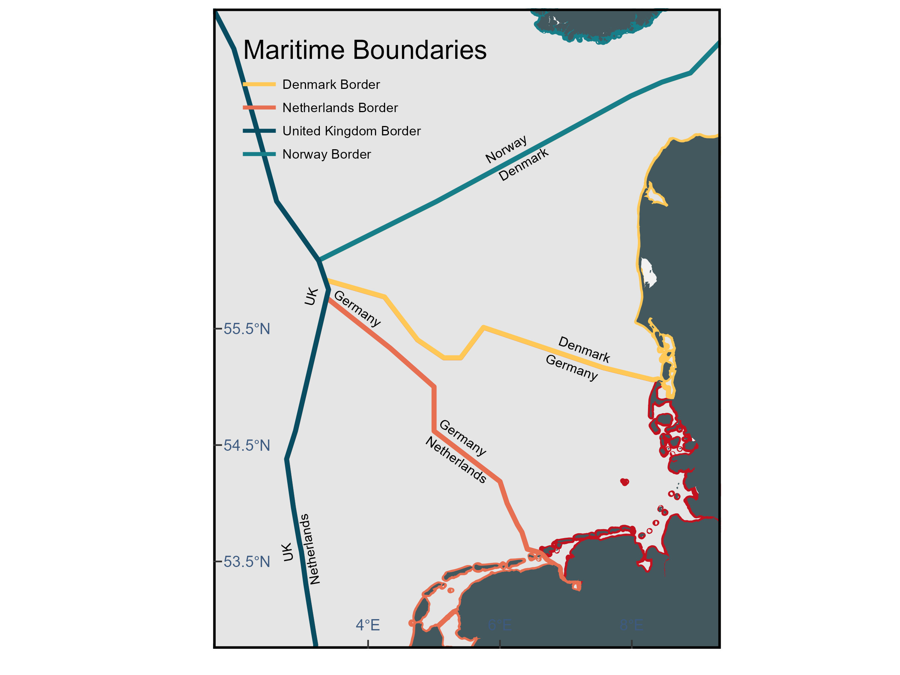

Exclusive Economic Zones (EEZ)
r
ggplot2
germansea
Y2025
In this blog post, we’ll explore maritime borders, including territorial waters and Exclusive Economic Zones (EEZ), by walking through the process of downloading the data and visualizing it.
Intro
Maritime borders are the divisions of the Earth’s water surface areas using physiographic or geopolitical criteria. They define the spatial limits of a country’s jurisdiction and rights over maritime resources and activities.
Territorial waters. This is the area of sea right next to a country’s coast, stretching up to 12 miles out. In this zone, the country has the same rights as it does on land, it controls the water, the air above it, and the seabed.
EEZ. The Exclusive Economic Zone (EEZ) extends from 12 to 200 nautical miles from a country’s coastline, where the coastal state has exclusive rights to explore, exploit, manage, and conserve natural resources such as fish, oil, and gas. However, it cannot restrict the passage or overflight of foreign ships and aircraft unless such movement directly affects its economic interests.
Data
To download data from the EEZ and territorial waters from Germany: go to GeoSeaPortal>In the theme gallery>move to Seegrenzen.
Once there, click on Was mochsten Sie tun? then Inhaltsbaum on the bottom, and in Kartenebenen, click on the tool sign, and then in the download sign. When it ask WFS download, you can choose shapefile for example. Download Seevermessung_DeutscheSeegrenzen:MaritimeBoundaryTerritorialSea and Seevermessung_DeutscheSeegrenzen:AWZ.
Read
Prepare to read shapefiles, by loading the packages and providing the folder where the data is stored.
library(here)
library(sf)This_directory<-here()Load the corresponding shapefiles. Now they should be in your R environment.
Germany_eez<-st_read(paste0(This_directory,"/MaritimeBoundaryAWZ.shp"))
Germany_mts<-st_read(paste0(This_directory,"/MaritimeBoundaryTerritorialSea.shp"))Base Map
Load the package ggplot2 to create plots.
library(ggplot2)Use the function geom_sf to visualize the shapefiles.
Map_eez<-ggplot() +
geom_sf(data = Germany_eez, color='#c1121f',linewidth=1.5) +
geom_sf(data = Germany_mts, color='#780000',linewidth=1,linetype="dotted")
Map_eezUse the package GermanNorthSea to add the land.
library(GermanNorthSea)Map_eez<- Map_eez +
geom_sf(data = GermanNorthSea::German_EEZ, colour = '#43585E', fill = 'transparent')+
geom_sf(data = GermanNorthSea::German_land, colour = '#43585E', fill = '#43585E')+
coord_sf(xlim = c(3,9),
ylim = c(53,56),
label_axes = list(left = "N", bottom = 'E'))
Map_eezAdd the attributes and the theme to your base map.
Map_eez<- Map_eez +
theme(
axis.text.x = element_text(size=10,vjust = 12,color='#3d5a80'),
axis.text.y = element_text(color='#3d5a80',size=10,margin = margin(0,-1.30,0,1, unit = 'cm')),
axis.title = element_blank(),
axis.ticks.length=unit(-0.20, "cm"),
panel.grid.major = element_blank(),
panel.grid.minor = element_blank(),
panel.background = element_rect(fill = '#F2F2F2'))+
xlab('Longitude')+ylab('Latitude')+
theme(panel.border = element_rect(colour = "black", fill=NA, linewidth=1.5))+
scale_x_continuous(breaks = c(4,6,8)) +
scale_y_continuous(breaks = c(53.5,54.5,55.5))
Map_eezAdd legend
Map_eez +
annotate("text", x = 3.1, y = 54.28, colour = "black", label = "Maritime Boundaries", size=6, hjust=0)+
annotate("segment", x = 3.1, xend = 3.5,y = 54.1, yend = 54.1,
colour = '#780000', size=1, linetype = "dotted")+
annotate("text", x = 3.6, y = 54.1, colour = "black", label = "Territorial waters", size=4, hjust=0)+
annotate("segment", x = 3.1, xend = 3.5,y = 54.0, yend = 54.0,
colour = '#c1121f', size=1.2, linetype = "solid")+
annotate("text", x = 3.6, y = 54.0, colour = "black", label = "Economic Exclusive Zone (EEZ)", size=4, hjust=0)
Using a package
The R package rgeoboundaries provides country political administrative boundaries.
To install the package
install.packages("mregions2")To load the package
library(mregions2)To explore the info containing
regions<-gaz_search_by_type("EEZ") #this might take some time, be patienceLoad tidyverse to filter the country boundaries of interest.
library(tidyverse)We know that Germany borders with Denmark, Netherlands and Norway at sea, so we will download those borders.
borders<-regions %>%
filter(preferredGazetteerName %in% c("German Exclusive Economic Zone",
"Danish Exclusive Economic Zone",
"British Exclusive Economic Zone",
"Norwegian Exclusive Economic Zone",
"Dutch Exclusive Economic Zone"
))These are the identifiers to download the border geometries.
borders$MRGIDGet geometry
Germany<-gaz_geometry(5669, format = "sfc")
Denmark<-gaz_geometry(5674, format = "sfc")
Norway<-gaz_geometry(5686, format = "sfc")
UK<-gaz_geometry(5696, format = "sfc")
Netherlands<-gaz_geometry(5668, format = "sfc")Export
unique(st_geometry_type(Germany))
Germany_clean <- Germany[st_geometry_type(Germany) != "GEOMETRYCOLLECTION", ]
Germany_cast <- st_collection_extract(Germany, "POLYGON")
st_write(Germany_cast,dsn = file.path(paste0(This_directory,"/Germany.shp")))
unique(st_geometry_type(Denmark))
Denmark_clean <- Denmark[st_geometry_type(Denmark) != "GEOMETRYCOLLECTION", ]
Denmark_cast <- st_collection_extract(Denmark, "POLYGON")
st_write(Denmark_cast,dsn = file.path(paste0(This_directory,"/Denmark.shp")))
unique(st_geometry_type(Norway))
Norway_clean <- Norway[st_geometry_type(Norway) != "GEOMETRYCOLLECTION", ]
Norway_cast <- st_collection_extract(Norway, "POLYGON")
st_write(Norway_cast,dsn = file.path(paste0(This_directory,"/Norway.shp")))
unique(st_geometry_type(UK))
UK_clean <- UK[st_geometry_type(UK) != "GEOMETRYCOLLECTION", ]
UK_cast <- st_collection_extract(UK, "POLYGON")
st_write(UK,dsn = file.path(paste0(This_directory,"/UK.shp")))
unique(st_geometry_type(Netherlands))
Netherlands_clean <- Netherlands[st_geometry_type(Netherlands) != "GEOMETRYCOLLECTION", ]
Netherlands_cast <- st_collection_extract(Netherlands, "POLYGON")
st_write(Netherlands,dsn = file.path(paste0(This_directory,"/Netherlands.shp")))Read
Base map
Boundaries_plot<-ggplot() +
geom_sf(data = Germany, color='#c1121f',linewidth=1.5)+
geom_sf(data = Netherlands, color='#e76f51',linewidth=1.5)+
geom_sf(data = Denmark, color='#ffc857',linewidth=1.5)+
geom_sf(data = Norway, color='#177e89',linewidth=1.5)+
geom_sf(data = UK, color='#084c61',linewidth=1.5)Land reference
Boundaries_plot<- Boundaries_plot+
geom_sf(data = GermanNorthSea::German_land, colour = '#43585E', fill = '#43585E')+
coord_sf(xlim = c(2,9),
ylim = c(53,58),
label_axes = list(left = "N", bottom = 'E'))
Boundaries_plotAdd theme
Boundaries_plot<- Boundaries_plot+
theme(
axis.text.x = element_text(size=10,vjust = 12,color='#3d5a80'),
axis.text.y = element_text(color='#3d5a80',size=10,margin = margin(0,-1.30,0,1, unit = 'cm')),
axis.title = element_blank(),
axis.ticks.length=unit(-0.20, "cm"),
panel.grid.major = element_blank(),
panel.grid.minor = element_blank(),
panel.background = element_rect(fill = '#F2F2F2'))+
xlab('Longitude')+ylab('Latitude')+
theme(panel.border = element_rect(colour = "black", fill=NA, linewidth=1.5))+
scale_x_continuous(breaks = c(4,6,8)) +
scale_y_continuous(breaks = c(53.5,54.5,55.5))
Boundaries_plotAdd legends
Boundaries_plot<- Boundaries_plot+
annotate("text", x = 2.1, y = 57.9, colour = "black", label = "Maritime Boundaries", size=6, hjust=0)+
annotate("segment", x = 2.1, xend = 2.6,y = 57.6, yend = 57.6,
colour = '#ffc857', size=1.2)+
annotate("text", x = 2.7, y = 57.6, colour = "black", label = "Denmark Border", size=3, hjust=0)+
annotate("segment", x = 2.1, xend = 2.6,y = 57.4, yend = 57.4,
colour = '#e76f51', size=1.2)+
annotate("text", x = 2.7, y = 57.4, colour = "black", label = "Netherlands Border", size=3, hjust=0)+
annotate("segment", x = 2.1, xend = 2.6,y = 57.2, yend = 57.2,
colour = '#084c61', size=1.2)+
annotate("text", x = 2.7, y = 57.2, colour = "black", label = "United Kingdom Border", size=3, hjust=0)+
annotate("segment", x = 2.1, xend = 2.6,y = 57, yend = 57, colour = '#177e89', size=1.2)+
annotate("text", x = 2.7, y = 57, colour = "black", label = "Norway Border", size=3, hjust=0)+
annotate("text", x = 4.9, y = 54.55, colour = "black", label = "Netherlands", size=3, hjust=0, angle=-45+10)+
annotate("text", x = 5.1, y = 54.7, colour = "black", label = "Germany", size=3, hjust=0, angle=-45+10)+
annotate("text", x = 6.9, y = 55.4, colour = "black", label = "Denmark", size=3, hjust=0, angle=-45+25)+
annotate("text", x = 6.7, y = 55.25, colour = "black", label = "Germany", size=3, hjust=0, angle=-45+25)+
annotate("text", x = 2.8, y = 53.5, colour = "black", label = "UK", size=3, hjust=0, angle=45+55)+
annotate("text", x = 3.2, y = 53.3, colour = "black", label = "Netherlands", size=3, hjust=0, angle=45+55)+
annotate("text", x = 3.1, y = 55.7, colour = "black", label = "UK", size=3, hjust=0, angle=45+30)+
annotate("text", x = 3.5, y = 55.81, colour = "black", label = "Germany", size=3, hjust=0, angle=-45+10)+
annotate("text", x = 6, y = 56.8, colour = "black", label = "Denmark", size=3, hjust=0, angle=30)+
annotate("text", x = 5.8, y = 56.95, colour = "black", label = "Norway", size=3, hjust=0, angle=30)+
NULL
Boundaries_plot
Further reading
Citations: For package rgeoboundaries, please cite: Runfola D, Anderson A, Baier H, Crittenden M, Dowker E, Fuhrig S, et al. (2020) geoBoundaries: A global database of political administrative boundaries. PLoS ONE 15(4): e0231866. https://doi.org/10.1371/journal.pone.0231866